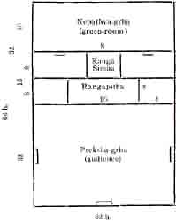

Theatre Architecture in Ancient India
BY V. RAGHAVAN, B.A. (HONS)
Mr. G. Venkatachalam says in his article on "Theatre Architecture" (Vol. I., No.2. of the Theatre, page, 109): "Books are silent as to the nature of theatre crafts in Ancient India. The assumption is that Dramas and Musical Plays were enacted on temporarily constructed stages amidst quiet cool groves or by the side of village shrines. Though the names rangabhumi or natakasala connote some sort of architectural structures, there is so far no evidence to show the type and the details of constructive features. It is possible that like in Ancient Greece theatres in India were mere open-air theatres with no permanent stage fittings or specially constructed buildings. Village dramas of today may give us some idea of the stage craft in olden days." Then on page 112, he again says: "As noticed in the beginning of this article we are not certain today of the nature of Indian stages in olden days, except the bare information that like Greek theatres, they were open-air theatres amidst sylvan surroundings or near village shrines."
These remarks are painful to one who has some acquaintance with the Sanskrit texts on Dramaturgy. The author above referred to evidently knows no sources of knowledge on "Theatre Architecture" in Ancient India other than the therukkuttus–street-dramas of the villages where benches serve as the platform and wooden mortars (ural) serve as chairs, and the kuttambalam of the temples, as for instance in Malabar. Books are not silent as to the nature of the theatre crafts in Ancient India. There is ample evidence to show that the names rangabhumi and natakasala cannote not ‘some sort of architectural structures,’ but well-planned, well-built, decorated, beautiful theatres. The types and the details of constructive features of the Indian theatres in olden times may be known by a reference to the Sanskrit sources. This article proposes to examine the available Sanskrit texts on Theatre Architecture.
Dance and Music were highly-evolved Court arts in Ancient India. They were not the folk-art to be shown on the streets or near the village shrines. The palaces contained separate halls for Natya. The Malavika Agnimitra of Kalidasa furnishes us the information that the palace of the King had a chitrasala (painting hall) and a prekshagara (a hall for witnessing Natya). It is in this prekshagara that Malavika's dance is presented. There can be no mistaking this place to be a mere hall or ‘some sort of architectural structure.’ It is a perfect natyasala, there being mention of the green-room and the curtain. In act V of the Sakuntala it is said that Hamsapadika, the King's quondam sweetheart is singing in the sangitasala. Saradatanaya in his work on Dramaturgy, Bhavaprakasa, describes three types of theatres in the palace of the king, each for the presenting of a different kind of dance. At the beginning of his work he says that he wrote the book on seeing thirty different kinds of dramas presented by a proprietor named Divakara from whom he learnt the natyaveda. This Saradatanaya is assigned to A. D. 1175-1250. Narada's Sangita-makaranda, a very old work on Music, describes one type of theatre, giving its measurements, etc. The Vishnudharmottara describes two types of theatres. Lastly we have Bharata's Natyasastra, the earliest work on Drama, devoting one whole chapter to Theatre Architecture Chapter 2. of the Natyasastra, gives three types of theatres, each again divided into three kinds according to their size and gives also measurement, etc., for each of these.
The verses in Chapter II, of the Natyasastra are confusing in some places. The great commentary on the Natyasastra by Acharya Abhinavagupta helps us a good deal in understanding Bharata. Dr. Keith's Sanskrit Drama, towards the end, contains a small section on stage architecture according to Bharata, but the account there is very meagre and sometimes mistaken also. Miss Goaavari V. Ketkar has produced a study of the Natyasastra, the use of which book, however, is little to those who do not know Marathi in which it is written. Still those who want to have an idea of the types of theatres in Ancient India may derive much benefit by referring to the very useful diagrams of Bharata's theatres given by Miss Ketkar in her book.
The sages request Bharata to speak of the theare, it being the first requisite in Natya. Bharata says that the learned Visvakarman devised three types of theatres according to the Sastras, viz., vikrashta, i.e., rectangular, chaturasra, i.e., square, and tryasra, i.e., triangular. Dr. Keith does not say what the vikrashta means and wrongly translates chaturasra as ‘rectangular.’ Each of these three again falls into three kinds according to size: jyeshtha, i.e., biggest, madhyama, i.e., middle-sized; and kaniyas, i.e., small. Dr. Keith misses this second classification. Of these three, i.e., biggest, middle-sized, and small, Bharata for the sake of good acoustic effect asks us to choose the miqdle-sized. A reading of the verses here would give the idea that the biggest is for the Devas, the middle-sized for kings, and the small for the people. Bharata asks us not to vie with the Devas and their very big theatres, because we mortals must build with great trouble while they do things by mere wish. So Bharata recommends the middle-sized theatre to us. Abhinava's commentary here gives original interpretation. We are unable to decide whether that is Bharata's idea, but Abhinava gives us additional information, namely, that if Bharata assigns the biggest theatre to the Devas, it means that we should resort to the biggest to enact such kinds of dramas as the Dima in which occur fights between the Devas and the asuras and consequently much space is wanted. If we have to enact the romances of a king's private life, the middle-sized theatre is enough for our purpose. We must go to the small theatre when we intend staging such plays as the monologue, Bhana plays in which ordinary men and women are characters.
The biggest measures 108 hastas or 54 yards; the middle-sized 64 h or 32 yds., and the small 32 h or 16 yds. These may be of the shape of a rectangle or square or triangle. Bharata then picks out the middle-sized which he has already praised as the best from all points of view and gives its dimensions, dividing it into three according to shape, namely, rectangular, square, and. triangular. The rectangular should be 64 h. long, 32 wide. This space should be divided into two, giving two squares, 32 X 32. The front square should be made into the audience-hall. The other square should again be divided into two halves of 16 X 32 each. Of these two portions, the front half 16 X 32 should be made into two halves measuring 8 X 32 each. An eight-hastas square at the centre of the back half of these two portions should be made into the rangasirsha. The front half 8 X 32 should have at the centre the rangapitha, i.e., the stage proper, measuring 8 X 16 leaving at both the sides two verandahs of 8 h. squire. The portion measuring 16 X 32 remaining at the back of the rangasirsha should be made into the nepathyagriha, the green-room with two doorways. The bewildering nature of this part of the natyasastra is plain when we see Abhinava giving numerous and differing views all over the chapter. Here especially he gives three other opinions of other scholars describing the measurements of the green-room, the rangasirsha and the rangapitha in three different ways. Abhinava himself bewilders us by giving a measurement of 64 X 64 h, which will mean a square theatre, though Bharata is speaking here of a rectangular theatre, 64 X 32 h. There should be two doorways to the green-room. The rangasirsha is to be a little higher, and here it is that the actors make offerings and puja before the drama begins and wait during the drama when they have dressed themselves up. Abhinava says that if the stage is imagined as a man lying on his back, this space called ‘the head of the stage’ will look like his head.
The chaturasra measures 32 h, on both sides. In this type the rangapitha is smaller naturally. The entrance to the green-room should be only one. In other respects, the construction of this type should follow the instructions given as regards the rectangular. Just as in the rectangular type, the stage proper is also rectangular, in the square type the stage proper is square.
Then Bharata describes a trysra–triangular theatre. The speciality to be noted in its construction is that the rangapitha here is triangular and has an entrance into the green-room at its back angle.
As regards the entrance gates to the audience-hall, Abhiava says that they may be three, perhaps one on each side. In the rectangular ‘the head of the stage’ is a little higher than the ‘stage proper’ while, in the square, both are on the same level.
As regards the size and measurement and types of theatres in general, Abhinava says that altogether eighteen kinds of theatres are possible as spoken of in the Sastras. Bharata himself says at the end of this chapter that there are many types of theatres and that other types must be constructed by learned men applying the instructions given above.
In a further chapter, Bharata says that we should resort to a rectangular stage to present dances involving much to-and-fro movements-gata-agata prachara, which are impossible on a stage of smaller width. He also says that in the square and the triangular stages the chaturasra gati only is possible.
There is also elaborate treatment of the number of pillars in the various portions of the theatre in each type, how and where they should be raised and what auspicious ceremonies should attend this stambhasthapana. Bharata dedicates four main pillars to the four castes even as portions of the whole theatre to the various gods for the sake of protection. There is absolutely no warrant for Dr. Keith to read here the idea that the dedication of the four main pillars also apportions those four places in the audience-hall for the four castes in the audience. Bharata speaks first that a good plot of ground should be chosen and cleared of all grass, shrubs, bones, skulls, etc. Music, puja and feast should attend the measurement-ceremony. The erection of the walls is then described. The whole hall must be richly decorated with wood-work, representing creepers, birds, animals, etc. The walls must be decorated with beautiful paintings of pictures of pleasure, of men and women and of creepers and trees, after the walls have been made smooth and white with chunam.
As regards the seating arrangements also, Bharata's theatre was perfect. He says that the seating arrangements should be in the form of a gallery–sopanakriti. The seats should be either of brick or of wood. They should be one and a half feet high above the ground, to give a good view of the rangapitha. The surface of the rangapitha should not be like the kurmapristha (high at the centre and sloping on all-sides like the back of a tortoise), or the matsyapristha (high along the centre and sloping on both sides like the back of a fish). It should be smooth like the surface of a mirror. Bharata says, that the house shall be dvibhumi. This term is interpreted variously. We may be tempted to take that the house had two storeys and that thus box-seats were also provided for in the ancient theatre. But Abhinava, after giving the opinions of other scholars, quotes his own teacher's view and says that what Bharata means by that word is that the seats should be in gallery form, rising from the pit to the height of the rangapitha. But the real import of that term seems to be that the house contains two bhumis, the raised platform for the stage and the pit for the audience. Bharata paid due attention to the acoustic properties of the theatre also. He says that 64 X 32 h. is the maximum size for a theatre and that one should not exceed that measurement. He praises the middle-sized alone among the three kinds of houses. The reason he gives is, this: "Constructors should not build a theatre of a greater size, for the Natya would become indistinct. If the hall should be very big, the actor's voice would either become indistinct or bad on account of the necessity for the actors to shout out. The colour of the face or the tune of the varying rasa and bhava would become indistinct owing to the largeness of the house. Therefore, of all halls, the middle-sized is the best, for here the instruments and songs would be beard beautifully well." Again he says that the stage should be like a cave in a mountain without very large windows, so that there might be a clear and audible sound effect. Even the windows should be fitted with apertured doors so that there might not be too much air. In this connection we may observe that Dr. Keiths connecting this dictum of Bharata that the hall should look like a cave with the Ramgrah Hill Cave once used for recitation, etc., is pointless.
As regards permanent fittings, if we go through the further chapters of the Natyasastra, we see that in this respect also the Ancient Indian theatre was remarkably equipped: The 23rd Chapter deals elaborately with dress, masks, ornamented decorations, painting and shading of faces, beards, etc. The introduction of birds and animals according to the situation technically called Sanjiva is described. Clothes, arms, and all sorts of accessories made of stiffened cloth, wood, metal, mud and wax are then described. Chapter 35 towards the end deals with the workmen, craftsmen, artisans and artists attached permanently to a theatre or a dramatic troupe. The garlander, goldsmith, painter, carpenter, washerman and others are here mentioned.
The Vishnudharmottara mentions only two types of theatres. It says "The Natya should be presented only in a theatre, and a theatre might be of two kinds, rectangular or square. The square should be 16 X 16 yds. The theatre should not be too small or too big, for there would be congestion in a small one and the show would become indistinct in a big one." The measurement given here for a rectangular theatre is not clear, the text being corrupt. This work does not mention the triangular theatre.
Narada's Sangitamakaranda mentions only the square theatre. It gives a new measurement, that this square theatre should be 48 X 48 yds. Thus according to Bharata this will perhaps be a jyestha type. Narada then adds that the natyasala must be richly painted with the eighty-four bandhas mentioned in the Kamasastra, or more likely the dance bandhas of the Natyasastra, inlaid with innumerable gems of diverse colours and decorated with chowries, flags and festoons. He gives the house four gates. In the centre there should be a raised platform, beautiful and perfumed, a twelve-yard square, in the middle of which the king's seat should be arranged.
Chapter X of Saradatanaya's Bhavaprakasa says that the palace of a king should have three kinds of theatres. This writer omits the rectangular type and has in its place the vritta, circular theatre He opines that the king should have all the three types in his palace, each for a particular kind of dance and audience. He assigns to the circular theatre only the chitra variety of the misra dance i.e., the style in which both marga and desi are mixed. The audience in this theatre should be only males, consisting, besides the king, of proprietors of other theatres –para-mantapikas, and the chief citizens. In the square type the audience consist of the king courtezans, ministers, merchants, commander of the army, friends and the king's sons. Here all sorts of misra dance and music could be conducted. In the triangular, the audience with the king include the sacrificial priests, the preceptors, the king's harem and the chief queen. The dance conducted in this theatre should be of the marga style only.
The Sivatattvaratnakara of Basavaraja says that King Venkatappa built a theatre at Ikkeri. It describes the grandeur of that theatre, worked in ivory and sandal and inlaid with precious stones, having, a garden around it, receiving enough light where it was wanted and with special artificial lighting arrangements in the darker portions. The whole house was beautified with paintings of various themes on the walls that looked like mirror.
The Sangitachudamani, an unpublished work on Music, seems to have dealt with the theatre. We have two verses from it describing yavanika (curtain) quoted in another available work on Poetics. The verses say that there should be a thick and beautiful curtain in front. Behind it, there should be two very thin and beautiful curtains looking just like thin mist. The first curtain is the front ‘drop’ which is removed as soon as the show begins. Behind the mist-like curtain, the danseuse performs the dance caned lasya.
Thus an examination of the Sanskrit works on Drama, Dance and Music, gives us the certain idea that the words natyasala and rangabhumi, far from being merely imaginary or representing anything crude, represented beautiful theatres of various types, scientifically planned and richly decorated. It is wrong to assume that the rasikas and royal savants of old thronged by the highway tree and squatted on the street to witness the Sanskrit dramas of Kalidasa, Sudraka, and Bhavabhuthi, or to enjoy the gracefull art of abhinaya and sangita, the science of which has been perfected in a vast literature.1
ONE KIND OF VIKRASHTA-RECTANGULAR THEATRE

1
The Silappadikaram (Tamil classic) describes a small stage intended for dance, more or less square in shape. Three curtains are mentioned and measurements are also given. We shall deal with it in a further article.